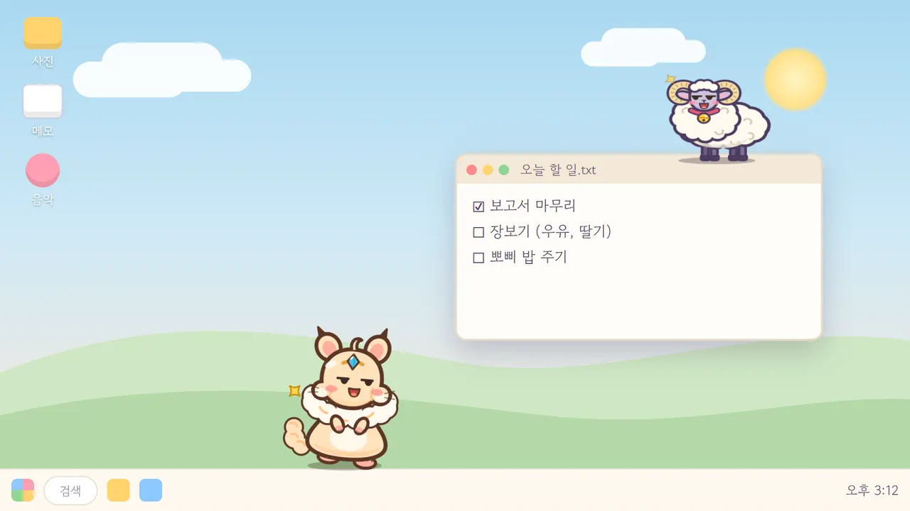
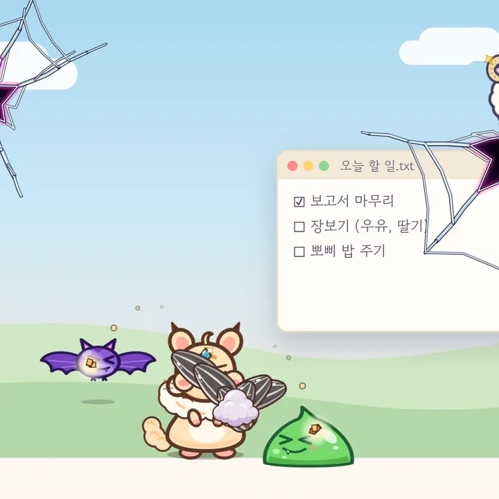
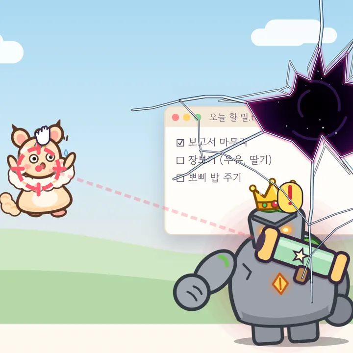
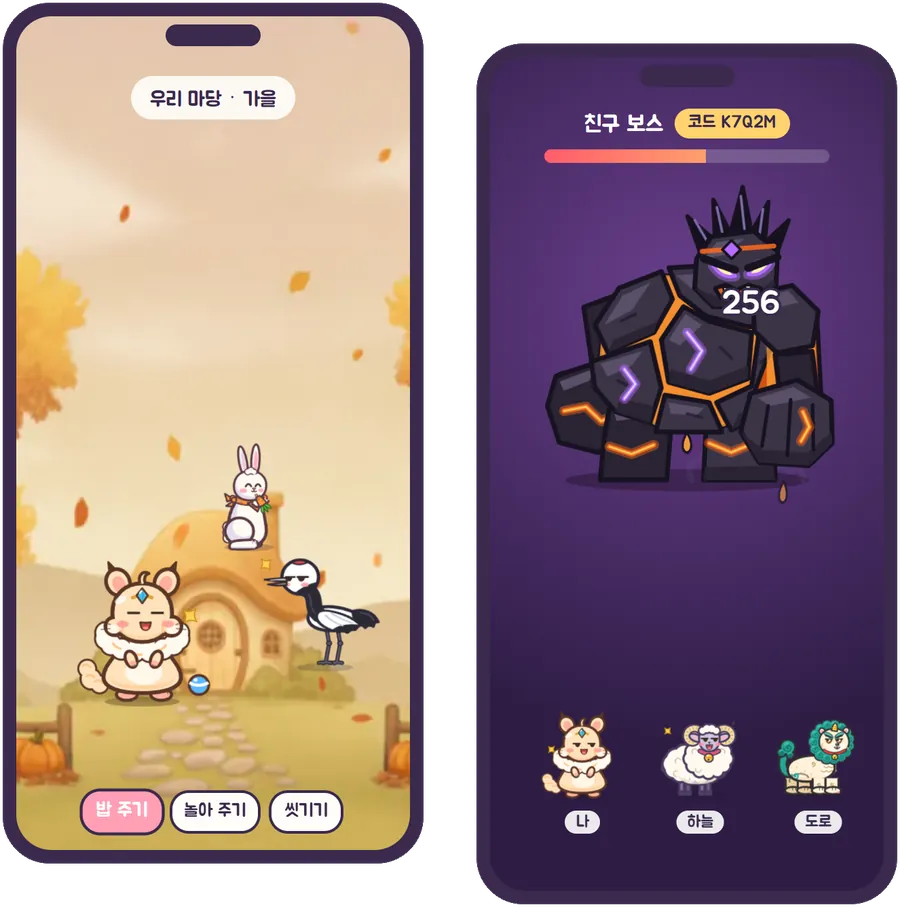
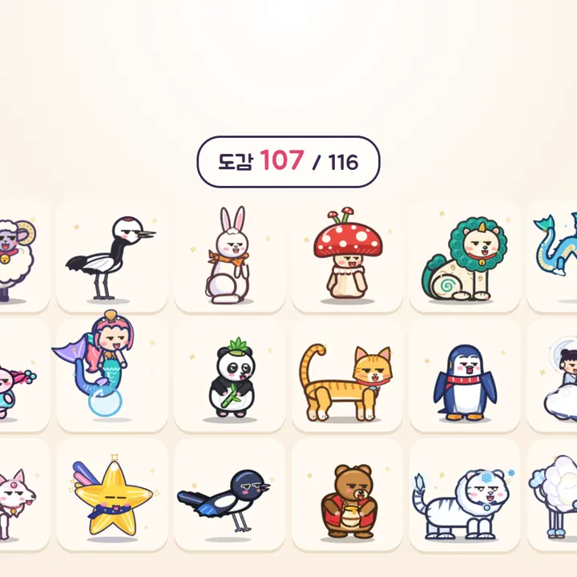
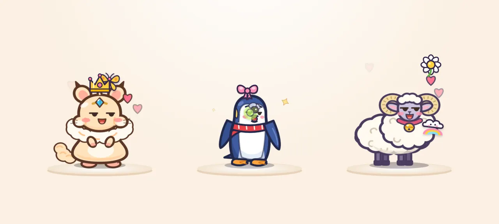

Windows PCAndroid 폰무료
바탕화면에 사는
작은 친구, 모니펫
일하는 동안 펫이 작업표시줄 위를 걷고, 창 위에서 쉬고, 화면을 깨고 나온 몬스터와 싸워요. 컴퓨터를 끄고 나갈 땐 폰으로 데려가 마당에서 함께 지내요.
Windows 10 · 11 · 무료
실제 게임 화면 · 소리 없음
모니펫과 함께하면
PC 바탕화면에서도, 폰에서도. 펫은 언제나 딱 한 곳에서 나를 기다려요.

작업표시줄을 걷고, 창 위에서 쉬어요
열어 둔 창 위로 올라가 낮잠을 자고, 배고프면 밥을 달라고 해요. 크기는 다섯 단계로 줄일 수 있고, 집중할 땐 방해 금지를 켜면 몬스터도 쉬어요.


화면이 쩍! 몬스터가 쳐들어와요
바탕화면이 깨지며 몬스터가 나오면 펫이 스킬로 알아서 싸워요. 가끔은 왕관 쓴 보스도 나와요. 펫을 마우스로 들고 버티면… 보스가 그물 바주카를 쏴요!

폰으로 데려가 마당에서 돌봐요
밖에서도 밥 주고, 놀아 주고, 씻겨 줘요. 친구에게 코드를 알려 주면 함께 큰 보스에 도전하고, 친구 PC에 펫을 놀러 보낼 수도 있어요.

알이 깨어나면, 이야기가 시작돼요
에픽 · 전설 · 신화 알은 깨어날 때 저마다의 이야기를 들려줘요. 동네 친구부터 전설의 존재까지 116종을 도감에 모아 보세요.

왕관 · 리본 · 꼬마 친구로 꾸며요
머리 장식, 발자국, 곁을 맴도는 꼬마 친구, 말풍선까지. 내 펫만의 모습으로 꾸며서 친구에게 보여 주세요.
이렇게 시작해요

- 내려받기 PC나 폰에 모니펫을 설치하고 로그인해요.
- 첫 알 받기 별토리에게 첫 알을 받아 따뜻하게 지켜봐요.
- 이름 짓기 알이 깨어나면 이름을 지어 주고 함께 지내요.
- 오가며 지내기 같은 계정이면 펫을 PC 바탕화면과 폰 사이로 데려갈 수 있어요.
내려받기
폰과 PC 어디에서 시작해도 돼요. 둘 다 깔면 펫이 오가며 지내요.

자주 묻는 질문
정말 무료인가요?
네, 내려받기와 플레이는 무료예요. 원할 때만 보는 보상 광고가 있어요.
몇 살부터 할 수 있나요?
모니펫은 만 14세 이상만 이용할 수 있어요. 처음 시작할 때 확인해요.
일할 때 방해되지 않나요?
펫 크기를 다섯 단계로 줄일 수 있어요. 집중해야 할 땐 방해 금지를 켜면 몬스터도 쳐들어오지 않고 쉬어요.
PC만, 또는 폰만 있어도 되나요?
네, 하나만 있어도 즐길 수 있어요. 둘 다 같은 계정으로 로그인하면 펫을 PC와 폰 사이로 데려갈 수 있어요. 펫은 언제나 한 곳에만 있어요 — PC, 폰, 또는 친구 집에 놀러 가 있거나.
설치할 때 파란 경고 창이 떠요.
새로 나온 프로그램이라 Windows가 한 번 더 묻는 거예요. [추가 정보] → [실행]을 누르면 돼요. 자세한 건 PC 설치 안내를 봐 주세요.
Mac이나 아이폰에서도 되나요?
지금은 Windows PC와 Android 폰만 지원해요.